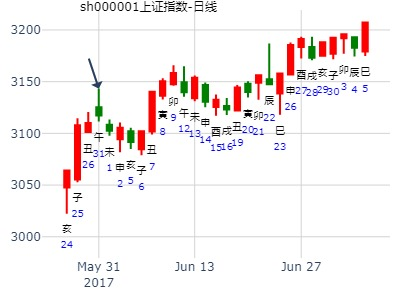
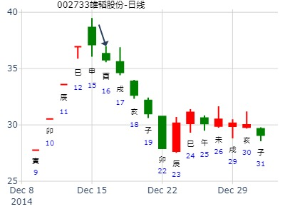

占事：教授------四川长虹2015年走势
方式：手工指定
公历：2015年1月31日9时9分 星期六 北京时间
干支：甲午年 丁丑月 丁未日 乙巳时
旬空：辰巳 申酉 寅卯 寅卯
丑月 丁未日 （旬空：寅卯）
坎宫：水雷屯
六神 伏 神 【本 卦】
青龙 ▅▅ ▅▅ 兄弟戊子水(霹雳火)
玄武 ▅▅▅▅▅ 官鬼戊戌土(平地木) 应
白虎 ▅▅ ▅▅ 父母戊申金(大驿土)
螣蛇 妻财戊午火▅▅ ▅▅ 官鬼庚辰土(白蜡金)
勾陈 ▅▅ ▅▅ 子孙庚寅木(松柏木) 世
朱雀 ▅▅▅▅▅ 兄弟庚子水(壁上土)
主帖标题: 我的2021年300指数卦1。（不是年卦）
1。（不是年卦）
干支：庚子年 戊子月 癸卯日 壬戌时
（日空：辰巳）
神煞：驿马－巳 桃花－子 日禄－子 贵人－卯，巳
坎宫：水雷屯
六神 伏神 本 卦
白虎 兄弟戊子水 ▅▅ ▅▅
螣蛇 官鬼戊戌土 ▅▅▅▅▅ 应
勾陈 父母戊申金 ▅▅ ▅▅
朱雀 妻财戊午火 官鬼庚辰土 ▅▅ ▅▅
青龙 子孙庚寅木 ▅▅ ▅▅ 世
玄武 兄弟庚子水 ▅▅▅▅▅
主帖标题: 测子日大盘
公历起卦时间：2023年1月17日14时26分 (电脑自动)
农历：壬寅年十二月廿六日未时
干支：壬寅年 癸丑月 乙亥日 癸未时 （日空：申酉）
坎宫：水雷屯
六神 伏神 本 卦
玄武 兄弟戊子水 ▅▅ ▅▅
白虎 官鬼戊戌土 ▅▅▅▅▅ 应
螣蛇 父母戊申金 ▅▅ ▅▅
勾陈 妻财戊午火 官鬼庚辰土 ▅▅ ▅▅
朱雀 子孙庚寅木 ▅▅ ▅▅ 世
青龙 兄弟庚子水 ▅▅▅▅▅
占事: 600365下周五日走势
起卦方式：手动摇卦
公历时间：2011年2月13日19时50分
干支：辛卯年 庚寅月 己亥日 甲戌时
旬空：午未 午未 辰巳 申酉
坎宫：水雷屯
六神 伏 神 【本 卦】
勾陈 ▄▄ ▄▄ 兄弟戊子水
朱雀 ▄▄▄▄▄ 官鬼戊戌土 应
青龙 ▄▄ ▄▄ 父母戊申金
玄武 妻财戊午火 ▄▄ ▄▄ 官鬼庚辰土
白虎 ▄▄ ▄▄ 子孙庚寅木 世
螣蛇 ▄▄▄▄▄ 兄弟庚子水
主帖标题: 600586今年上半年走势 一起来探究卦象
公历时间：2011年2月27日15时2分 星期日
农历时间：辛卯年正月廿五申时
干支：辛卯年 庚寅月 癸丑日 庚申时 (旬空：寅卯)
神煞：驿马—亥 桃花—午 日禄—子 贵人—卯，巳
坎宫：水雷屯
六神 伏 神 【本 卦】
白虎 ▅▅ ▅▅ 兄弟戊子水
螣蛇 ▅▅▅▅▅ 官鬼戊戌土 应
勾陈 ▅▅ ▅▅ 父母戊申金
朱雀 妻财戊午火 ▅▅ ▅▅ 官鬼庚辰土
青龙 ▅▅ ▅▅ 子孙庚寅木 世
玄武 ▅▅▅▅▅ 兄弟庚子
根据我的年卦看,本次上张应该持续到立秋后的十日，
也就是阳历8月14日左右.到时候会有不小的下跌,
下次波断上涨应在戌月
占事：2014年股市测算[纯周易测算]
干支：甲午年 丙寅月 丙午日 壬辰时 （日空：寅卯）
神煞：驿马－申 桃花－卯 日禄－巳 贵人－酉，亥
坎宫：水雷屯
六神 伏神 本 卦
青龙 兄弟戊子水 ▅▅ ▅▅
玄武 官鬼戊戌土 ▅▅▅▅▅ 应
白虎 父母戊申金 ▅▅ ▅▅
腾蛇 妻财戊午火 官鬼庚辰土 ▅▅ ▅▅
勾陈 子孙庚寅木 ▅▅ ▅▅ 世
朱雀 兄弟庚子水 ▅▅▅▅▅
评： 虽然是四大凶卦，但是财福都得月日，依旧能涨。
世爻旬空，申月冲实。
占事：新占本周股票财运卦
手摇
公历时间：2020年2月10日8时11分
干 支：庚子年 戊寅月 癸未日 丙辰时
旬 空：辰巳 申酉 申酉 子丑
神 煞：驿马─巳 桃花─子 日禄─子 贵人─巳，卯
中国预测网纳甲六爻排盘
坎宫：水雷屯
六神 伏 神 【本 卦】
白虎 ▄▄ ▄▄ 兄弟戊子水
螣蛇 ▄▄▄▄▄ 官鬼戊戌土 应
勾陈 ▄▄ ▄▄ 父母戊申金
朱雀 妻财戊午火 ▄▄ ▄▄ 官鬼庚辰土
青龙 ▄▄ ▄▄ 子孙庚寅木 世
玄武 ▄▄▄▄▄ 兄弟庚子水
又是个静卦，变化也太大了。
反馈，，本周获利1283元。2.5点

主帖标题: 测2.20-24 沪市大盘
公历起卦时间：2023年2月17日9时42分 (在线摇卦)
干支：癸卯年 甲寅月 丙午日 癸巳时 （日空：寅卯）
坎宫：水雷屯
六神 伏神 本 卦
青龙 兄弟戊子水 ▅▅ ▅▅
玄武 官鬼戊戌土 ▅▅▅▅▅ 应
白虎 父母戊申金 ▅▅ ▅▅
螣蛇 妻财戊午火 官鬼庚辰土 ▅▅ ▅▅
勾陈 子孙庚寅木 ▅▅ ▅▅ 世
朱雀 兄弟庚子水 ▅▅▅▅▅
公历起卦时间：2023年2月17日15时7分 (手工指定)
干支：癸卯年 甲寅月 丙午日 丙申时 （日空：寅卯）
艮宫：风山渐 (归魂) 兑宫：水山蹇
六神 伏神 本 卦 变 卦
青龙 官鬼辛卯木 ▅▅▅▅▅ 应 ○→ 妻财戊子水 ▅▅ ▅▅
玄武 妻财丙子水 父母辛巳火 ▅▅▅▅▅ 兄弟戊戌土 ▅▅▅▅▅
白虎 兄弟辛未土 ▅▅ ▅▅ 子孙戊申金 ▅▅ ▅▅ 世
螣蛇 子孙丙申金 ▅▅▅▅▅ 世 子孙丙申金 ▅▅▅▅▅
勾陈 父母丙午火 ▅▅ ▅▅ 父母丙午火 ▅▅ ▅▅
朱雀 兄弟丙辰土 ▅▅ ▅▅ 兄弟丙辰土 ▅▅ ▅▅ 应
更改：根据今日走势，下周改为看多，但涨幅不大。
14：35分摇卦测万科明天走势！
想购万科A股，摇卦测该股明天涨跌！
当天以7。9元的价位又购了少量万科！16日该股收盘于7。89元！
公历时间：2009年3月16日14时35分 星期一
干支：己丑年 丁卯月 庚申日 癸未时 (旬空：子丑)
神煞：驿马—寅 桃花—酉 日禄—申 贵人—寅，午
坎宫：水雷屯
六神 伏 神 【本 卦】
螣蛇 ▅▅ ▅▅ 兄弟戊子水
勾陈 ▅▅▅▅▅ 官鬼戊戌土 应
朱雀 ▅▅ ▅▅ 父母戊申金
青龙 妻财戊午火 ▅▅ ▅▅ 官鬼庚辰土
玄武 ▅▅ ▅▅ 子孙庚寅木 世
白虎 ▅▅▅▅▅ 兄弟庚子水
点评：世爻暗动
此卦用神伏藏不现，居然大涨，不可思议！
恒源煤电(600971)一周走势：水雷屯静卦。yyzxh888
公历起卦时间：2011年3月14日12时21分 (在线摇卦)
干支：辛卯年 辛卯月 戊辰日 戊午时 （日空：戌亥）
坎宫：水雷屯
六神 伏神 本 卦
朱雀 兄弟戊子水 ▅▅ ▅▅
青龙 官鬼戊戌土 ▅▅▅▅▅ 应
玄武 父母戊申金 ▅▅ ▅▅
白虎 妻财戊午火 官鬼庚辰土 ▅▅ ▅▅
腾蛇 子孙庚寅木 ▅▅ ▅▅ 世
勾陈 兄弟庚子水 ▅▅▅▅▅
男 占事：3.15上证收盘十位数
公历起卦时间：2021年3月14日22时14分 (电脑自动)
干支：辛丑年 辛卯月 辛酉日 己亥时 （日空：子丑）
神煞：驿马－亥 桃花－午 日禄－酉 贵人－寅，午
坎宫：水雷屯
六神 伏神 本 卦
螣蛇 兄弟戊子水 ▅▅ ▅▅
勾陈 官鬼戊戌土 ▅▅▅▅▅ 应
朱雀 父母戊申金 ▅▅ ▅▅
青龙 妻财戊午火 官鬼庚辰土 ▅▅ ▅▅
玄武 子孙庚寅木 ▅▅ ▅▅ 世
白虎 兄弟庚子水 ▅▅▅▅▅
男 占事：江西铜业何时涨停？
公历起卦时间：2021年3月24日13时27分 (电脑自动)
干支：辛丑年 辛卯月 辛未日 乙未时 （日空：戌亥）
神煞：驿马－巳 桃花－子 日禄－酉 贵人－寅，午
坎宫：水雷屯
六神 伏神 本 卦
螣蛇 兄弟戊子水 ▅▅ ▅▅
勾陈 官鬼戊戌土 ▅▅▅▅▅ 应
朱雀 父母戊申金 ▅▅ ▅▅
青龙 妻财戊午火 官鬼庚辰土 ▅▅ ▅▅
玄武 子孙庚寅木 ▅▅ ▅▅ 世
白虎 兄弟庚子水 ▅▅▅▅▅
主帖标题: 如何断六爻股票卦？
好股必然好卦，好卦必然好股。
占事：我的600130波导股分什么价卖出好
公历起卦时间：2009年4月15日17时34分 (在线摇卦)
干支：己丑年 戊辰月 庚寅日 乙酉时 （日空：午未）
神煞：驿马－申 桃花－卯 日禄－申 贵人－丑，未
坎宫：水雷屯
六神 伏神 本 卦
腾蛇 兄弟戊子水 ▅▅ ▅▅
勾陈 官鬼戊戌土 ▅▅▅▅▅ 应
朱雀 父母戊申金 ▅▅ ▅▅
青龙 妻财戊午火 官鬼庚辰土 ▅▅ ▅▅
玄武 子孙庚寅木 ▅▅ ▅▅ 世
白虎 兄弟庚子水 ▅▅▅▅▅
风生水起 铜钱卦 占事：中体产业未来二周?
公历时间：2015年5月6日11时36分????
干 支：乙未年?辛巳月?壬午日?丙午时
旬 空：辰巳???申酉???(申酉)???寅卯 ?
坎宫：水雷屯
六神? 伏 神 【本 卦】
白虎 ▄▄??▄▄ 兄弟戊子水
螣蛇 ▄▄▄▄▄ 官鬼戊戌土 应
勾陈 ▄▄??▄▄ 父母戊申金
朱雀 妻财戊午火 ▄▄??▄▄ 官鬼庚辰土
青龙 ▄▄??▄▄ 子孙庚寅木 世
玄武 ▄▄▄▄▄ 兄弟庚子水
601515
起卦hour:2015年5月30日9时51分
时间: 2015-05-30
干支: 乙未年辛巳月丙午日 (旬空: 寅卯 )
屯静卦
青龙 ▅▅ ▅▅ 兄弟子水
玄武 ▅▅▅▅▅ 官鬼戌土 应
白虎 ▅▅ ▅▅ 父母申金
腾蛇 ▅▅ ▅▅ 官鬼辰土
勾陈 ▅▅ ▅▅ 子孙寅木 世
朱雀 ▅▅▅▅▅ 兄弟子水
占事：2017年6月大盘涨跌？
公历起卦时间：2017年5月31日16时29分 (手工指定)
干支：丁酉年 乙巳月 戊午日 庚申时 （日空：子丑）
神煞：驿马－申 桃花－卯 日禄－巳 贵人－丑，未
坎宫：水雷屯 坎宫：水雷屯
六神 伏神 本 卦 变 卦
朱雀 兄弟戊子水 ▅▅ ▅▅ 兄弟戊子水 ▅▅ ▅▅
青龙 官鬼戊戌土 ▅▅▅▅▅ 应 官鬼戊戌土 ▅▅▅▅▅ 应
玄武 父母戊申金 ▅▅ ▅▅ 父母戊申金 ▅▅ ▅▅
白虎 妻财戊午火 官鬼庚辰土 ▅▅ ▅▅ 官鬼庚辰土 ▅▅ ▅▅
腾蛇 子孙庚寅木 ▅▅ ▅▅ 世 子孙庚寅木 ▅▅ ▅▅ 世
勾陈 兄弟庚子水 ▅▅▅▅▅ 兄弟庚子水 ▅▅▅▅▅

测600637东方明珠在2020年6月份走势
公历起卦时间：2020年5月31日15时28分 (手工指定)
干支：庚子年 辛巳月 甲戌日 壬申时 （日空：申酉）
神煞：驿马－申 桃花－卯 日禄－寅 贵人－丑，未
坎宫：水雷屯
六神 伏神 本 卦
玄武 兄弟戊子水 ▅▅ ▅▅
白虎 官鬼戊戌土 ▅▅▅▅▅ 应
螣蛇 父母戊申金 ▅▅ ▅▅
勾陈 妻财戊午火 官鬼庚辰土 ▅▅ ▅▅
朱雀 子孙庚寅木 ▅▅ ▅▅ 世
青龙 兄弟庚子水 ▅▅▅▅▅
主帖标题: 5.18是涨？跌？幅度如何？（5）
辛丑年 癸巳月 乙丑日 甲申时
坎宫：水雷屯
六神 伏神 本 卦
玄武 兄弟戊子水 ▅▅ ▅▅
白虎 官鬼戊戌土 ▅▅▅▅▅ 应
螣蛇 父母戊申金 ▅▅ ▅▅
勾陈 妻财戊午火 官鬼庚辰土 ▅▅ ▅▅
朱雀 子孙庚寅木 ▅▅ ▅▅ 世
青龙 兄弟庚子水 ▅▅▅▅▅
上证：收阳，中阳
占事：2014.6.15-6.20，510300 沪深300指数走势（ferrari铜钱）
公历起卦时间：2014年6月13日22时16分 (手工指定)
干支：甲午年 庚午月 乙卯日 丁亥时 （日空：子丑）
坎宫：水雷屯
六神 伏神 本 卦
玄武 兄弟戊子水 ▅▅ ▅▅
白虎 官鬼戊戌土 ▅▅▅▅▅ 应
腾蛇 父母戊申金 ▅▅ ▅▅
勾陈 妻财戊午火 官鬼庚辰土 ▅▅ ▅▅
朱雀 子孙庚寅木 ▅▅ ▅▅ 世
青龙 兄弟庚子水 ▅▅▅▅▅
午财值日最高点。
戌日冲飞露伏，但也泄财，低开高走。
寅日财得长生。
全周大跌。
午日伏神值日涨一天，后大跌三天。
6月下半月大盘涨跌横如何？
公历起卦时间：2016年6月14日11时31分 (在线摇卦)
干支：丙申年 甲午月 丁卯日 丙午时 （日空：戌亥）
神煞：驿马－巳 桃花－子 日禄－午 贵人－酉，亥
坎宫：水雷屯
六神 伏神 本 卦
青龙 兄弟戊子水 ▅▅ ▅▅
玄武 官鬼戊戌土 ▅▅▅▅▅ 应
白虎 父母戊申金 ▅▅ ▅▅
腾蛇 妻财戊午火 官鬼庚辰土 ▅▅ ▅▅
勾陈 子孙庚寅木 ▅▅ ▅▅ 世
朱雀 兄弟庚子水 ▅▅▅▅▅
主帖标题: 最好是预测蓄势充分,长期威廉进入强势初期且题材好的股
占事：603876鼎胜新材下周走势
起卦公历：2021年6月8日19时19分(北京时间)
干支： 辛丑年 甲午月 丁亥日 庚戌时 (卦身：未)
主变卦 水雷屯(坎宫) [空亡:午、未]
青龙 ━ ━ 兄弟子水
玄武 ━━━ 官鬼戌土 应
白虎 ━ ━ 父母申金
螣蛇 ━ ━ 官鬼戌土
勾陈 ━ ━ 父母申金 世
朱雀 ━━━ 妻财午火
这支股票从下周开始又是一波拉升，看了几只股票都是涨到24号，
难道25号大盘要见顶跳水？
求测内容：买入300942 下半年可以赚钱吗
起卦方式：手动摇卦
公历：2022年06月19日16时04分
四柱：壬寅年 丙午月 癸卯日 庚申时 (日空：辰巳)
卦名：坎宫2世卦：水雷屯
白虎 ▅ ▅ 兄弟戊子水
螣蛇 ▅▅▅ 官鬼戊戌土 应
勾陈 ▅ ▅ 父母戊申金
朱雀 妻财戊午火 ▅ ▅ 官鬼庚辰土
青龙 ▅ ▅ 子孙庚寅木 世
玄武 ▅▅▅ 兄弟庚子水
占事：清净道人 6.23上证？
起卦方式：手动摇卦
公历：2022年06月23日09时11分
四柱：壬寅年 丙午月 丁未日 乙巳时 (日空：寅卯)
卦名：坎宫2世卦：水雷屯
卦身：主卦寅爻持世，卦身在三爻；阴爻持世，月卦身在未
青龙 ▅ ▅ 兄弟戊子水
玄武 ▅▅▅ 官鬼戊戌土 应
白虎 ▅ ▅ 父母戊申金
螣蛇 妻财戊午火 ▅ ▅ 官鬼庚辰土
勾陈 ▅ ▅ 子孙庚寅木 世
朱雀 ▅▅▅ 兄弟庚子水

主帖标题: [原创]7月21日股市上海赛一次性预测五天涨跌
占事: [原创]7月21日股市上海大盘
预测大赛一次性预测五天涨跌
大盘日K线演化静卦象,第一次使用,为了实验!大家一起分析三个文章进行预测五天涨跌收盘为准!大家加油!提高大家预测技术的机会!
公历时间：2008年7月21日9时30分 星期一
干支：戊子年 己未月 壬戌日 乙巳时 (旬空：子丑)
神煞：驿马—申 桃花—卯 日禄—亥 贵人—卯，巳
坎宫：水雷屯
六神 伏 神 【本 卦】
白虎 ▅▅ ▅▅ 兄弟戊子水
螣蛇 ▅▅▅▅▅ 官鬼戊戌土 应
勾陈 ▅▅ ▅▅ 父母戊申金
朱雀 妻财戊午火 ▅▅ ▅▅ 官鬼庚辰土
青龙 ▅▅ ▅▅ 子孙庚寅木 世
玄武 ▅▅▅▅▅ 兄弟庚子水
占事：未月股票财运 -以大盘替代
姓名：九戒 出生年:1981 性别：男
占事：未月 股票 财运
公历时间：2012年7月7日10时37分
干 支：壬辰年 丁未月 己巳日 己巳时
旬 空：午未 寅卯 (戌亥) 戌亥
坎宫：水雷屯
六神 伏 神 【本 卦】
勾陈 ▄▄ ▄▄ 兄弟戊子水
朱雀 ▄▄▄▄▄ 官鬼戊戌土 应
青龙 ▄▄ ▄▄ 父母戊申金
玄武 妻财戊午火 ▄▄ ▄▄ 官鬼庚辰土
白虎 ▄▄ ▄▄ 子孙庚寅木 世
螣蛇 ▄▄▄▄▄ 兄弟庚子水
当月大跌。子孙入墓。

男 占事：600760中航黑豹明天涨跌
公历起卦时间：2015年7月16日16时42分 (电脑自动)
干支：乙未年 癸未月 癸巳日 庚申时 （日空：午未）
神煞：驿马－亥 桃花－午 日禄－子 贵人－卯，巳
坎宫：水雷屯 坎宫：水雷屯
六神 伏神 本 卦 变 卦
白虎 兄弟戊子水 ▅▅ ▅▅ 兄弟戊子水 ▅▅ ▅▅
腾蛇 官鬼戊戌土 ▅▅▅▅▅ 应 官鬼戊戌土 ▅▅▅▅▅ 应
勾陈 父母戊申金 ▅▅ ▅▅ 父母戊申金 ▅▅ ▅▅
朱雀 妻财戊午火 官鬼庚辰土 ▅▅ ▅▅ 官鬼庚辰土 ▅▅ ▅▅
青龙 子孙庚寅木 ▅▅ ▅▅ 世 子孙庚寅木 ▅▅ ▅▅ 世
玄武 兄弟庚子水 ▅▅▅▅▅ 兄弟庚子水 ▅▅▅▅▅
女 占事：占7.27.-7.31.大盘走势
起卦方式：手动摇卦
公历时间：2015年7月26日13时45分
干 支：乙未年 癸未月 癸卯日 己未时
旬 空：辰巳 申酉 辰巳 子丑
神 煞：驿马─巳 桃花─子 日禄─子 贵人─巳，卯
坎宫：水雷屯
六神
伏 神 【本 卦】
白虎 ▄▄ ▄▄ 兄弟戊子水
螣蛇 ▄▄▄▄▄ 官鬼戊戌土 应
勾陈 ▄▄ ▄▄ 父母戊申金
朱雀 妻财戊午火 ▄▄ ▄▄ 官鬼庚辰土
青龙 ▄▄ ▄▄ 子孙庚寅木 世
玄武 ▄▄▄▄▄ 兄弟庚子水

主帖标题: [原创]第三期预测上海大盘比赛8月4日到8日
公历时间：2008年8月3日20时25分 星期日
农历时间：戊子年七月初三戌时
干支：戊子年 己未月 乙亥日 丙戌时 (旬空：申酉)
神煞：驿马—巳 桃花—子 日禄—卯 贵人—子，申
坎宫：水雷屯
六神 伏 神 【本 卦】
玄武 ▅▅ ▅▅ 兄弟戊子水
白虎 ▅▅▅▅▅ 官鬼戊戌土 应
螣蛇 ▅▅ ▅▅ 父母戊申金
勾陈 妻财戊午火 ▅▅ ▅▅ 官鬼庚辰土
朱雀 ▅▅ ▅▅ 子孙庚寅木 世
青龙 ▅▅▅▅▅ 兄弟庚子水
这是大盘日线演化的信息!
122-212 风生水起? 占事:?603003?下周
起卦方式：手动摇卦? 周易天地www.64gua.com六爻线上排盘系统?
公历时间：2014年8月2日9时40分?
干支：甲午年?辛未月?乙巳日?辛巳时?
旬空：辰巳???戌亥???寅卯???申酉??
坎宫：水雷屯
六神? 伏 神 【本 卦】
玄武 ▄▄??▄▄ 兄弟戊子水
白虎 ▄▄▄▄▄ 官鬼戊戌土 应
螣蛇 ▄▄??▄▄ 父母戊申金
勾陈 妻财戊午火 ▄▄??▄▄ 官鬼庚辰土
朱雀 ▄▄??▄▄ 子孙庚寅木 世
青龙 ▄▄▄▄▄ 兄弟庚子水
主帖标题: 2020年四季度新一轮行情即将来临
时间: 2020-09-29
干支: 庚子年乙酉月乙亥日 (旬空: 申酉 )
屯静卦
六神 伏神 本 卦
玄武 ▅▅ ▅▅ 兄弟子水
白虎 ▅▅▅▅▅ 官鬼戌土 应
腾蛇 ▅▅ ▅▅ 父母申金
勾陈 妻财午火▅▅ ▅▅ 官鬼辰土
朱雀 ▅▅ ▅▅ 子孙寅木 世
青龙 ▅▅▅▅▅ 兄弟子水
占事：2015年11月大盘涨跌？
公历起卦时间：2015年10月30日15时17分 (手工指定)
干支：乙未年 丙戌月 己卯日 壬申时 （日空：申酉）
神煞：驿马－巳 桃花－子 日禄－午 贵人－子，申
坎宫：水雷屯
六神 伏神 本 卦
勾陈 兄弟戊子水 ▅▅ ▅▅
朱雀 官鬼戊戌土 ▅▅▅▅▅ 应
青龙 父母戊申金 ▅▅ ▅▅
玄武 妻财戊午火 官鬼庚辰土 ▅▅ ▅▅
白虎 子孙庚寅木 ▅▅ ▅▅ 世
腾蛇 兄弟庚子水 ▅▅▅▅▅
男 占事：002733雄韬股份明天涨跌
公历起卦时间：2014年12月16日16时53分 (电脑自动)
干支：甲午年 丙子月 辛酉日 丙申时 （日空：子丑）
神煞：驿马－亥 桃花－午 日禄－酉 贵人－寅，午
坎宫：水雷屯
六神 伏神 本 卦
腾蛇 兄弟戊子水 ▅▅ ▅▅
勾陈 官鬼戊戌土 ▅▅▅▅▅ 应
朱雀 父母戊申金 ▅▅ ▅▅
青龙 妻财戊午火 官鬼庚辰土 ▅▅ ▅▅
玄武 子孙庚寅木 ▅▅ ▅▅ 世
白虎 兄弟庚子水 ▅▅▅▅▅

光大证券子月走势。 水雷屯。niubi
--信息不全，原帖无月日，暂时以 2015-12-05 六神符合
时间: 2015-12-05
干支: 乙未年丁亥月乙卯日 (旬空: 子丑 )
屯静卦
六神 伏神 本 卦
玄武 ▅▅ ▅▅ 兄弟子水
白虎 ▅▅▅▅▅ 官鬼戌土 应
腾蛇 ▅▅ ▅▅ 父母申金
勾陈 妻财午火▅▅ ▅▅ 官鬼辰土
朱雀 ▅▅ ▅▅ 子孙寅木 世
青龙 ▅▅▅▅▅ 兄弟子水
主帖标题: 2020大盘指数涨跌卦
占事：2020大盘指数涨跌
公历起卦时间：2019年12月31日16时24分 (手工指定)
干支：己亥年 丙子月 壬寅日 戊申时 （日空：辰巳）
神煞：驿马－申 桃花－卯 日禄－亥 贵人－卯，巳
坎宫：水雷屯
六神 伏神 本 卦
白虎 兄弟戊子水 ▅▅ ▅▅
腾蛇 官鬼戊戌土 ▅▅▅▅▅ 应
勾陈 父母戊申金 ▅▅ ▅▅
朱雀 妻财戊午火 官鬼庚辰土 ▅▅ ▅▅
青龙 子孙庚寅木 ▅▅ ▅▅ 世
玄武 兄弟庚子水 ▅▅▅▅▅